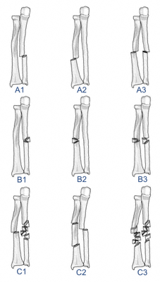

-
Descriptive:
Open or closed
Location
Comminuted, segmental, multifragmented
Displacement
Angulation
Rotation
DRUJ: stable (reduced), unstable (subluxed, dislocated)
Radial head: reduced, subluxed, dislocated
- OTA: radius/ulna, diaphyseal (22)
Type A: simple
A1: ulna
A2: radius
A3: both
Type B: wedge
B1: ulna
B2: radius
B3: wedge of one, simple or wedge of other
Type C: complex
C1: ulna complex, simple or wedge of radius
C2: radius complex, simple or wedge of ulna
C3: complex both

OTA classification